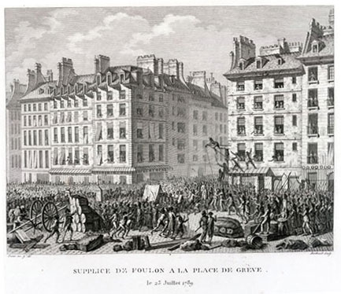

 |
| 25.
Supplice de Foulon à la Place de Grève, le 23 Juillet
1789. [Punishment of Foulon at the Place de Grève, July 23,
1789] Note: Scholars place this event on July 22, 1789. Source: Beinecke Rare Book and Manuscript Library, Yale University |